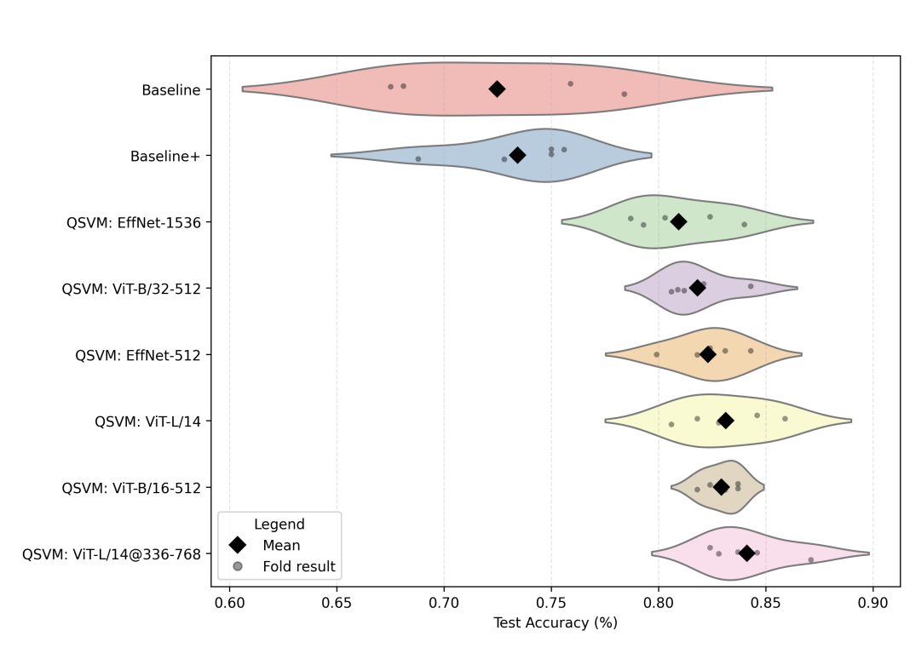
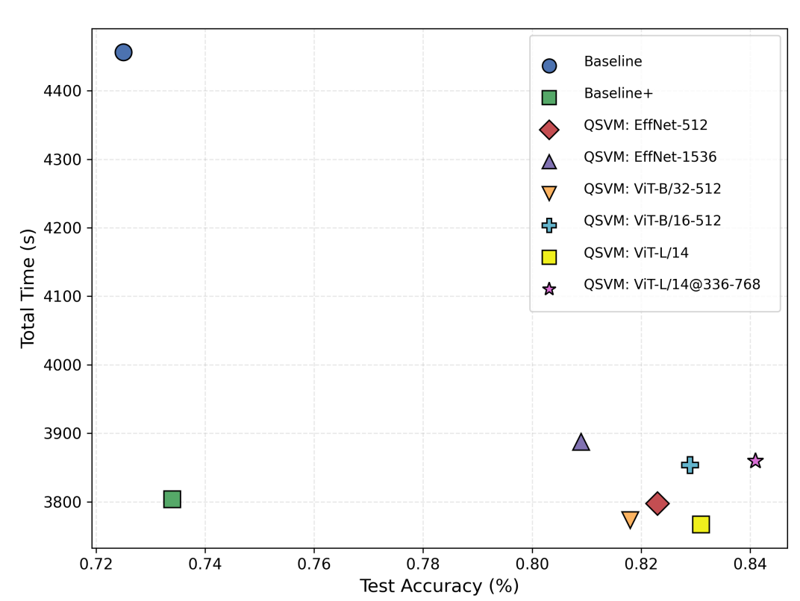

We demonstrate the first systematic evidence that quantum kernel advantage depends critically on embedding choice, revealing fundamental synergy between transformer attention and quantum feature spaces.
This summary was automatically generated by Google's NotebookLM
Complete pipeline overview showing the sequential steps from data extraction to QSVM evaluation
Quantum Support Vector Machines face scalability challenges due to high-dimensional quantum states and hardware limitations. We propose an embedding-aware quantum-classical pipeline combining class-balanced k-means distillation with pretrained Vision Transformer embeddings.
Our key finding: ViT embeddings uniquely enable quantum advantage, achieving up to 8.02% accuracy improvements over classical SVMs on Fashion-MNIST and 4.42% on MNIST, while CNN features show performance degradation. Using 16-qubit tensor network simulation via cuTensorNet, we provide the first systematic evidence that quantum kernel advantage depends critically on embedding choice.
This reveals fundamental synergy between transformer attention and quantum feature spaces, providing a practical pathway for scalable quantum machine learning that leverages modern neural architectures. The framework demonstrates that achieving quantum advantage requires careful algorithm-representation co-design rather than naive application of quantum methods.
Strategic combination of classical preprocessing with quantum kernel methods, enabling scalable quantum machine learning on current hardware.
First systematic investigation of how different embedding strategies affect quantum advantage, revealing transformer-quantum synergy.
Consistent performance improvements with ViT embeddings: up to 8.02% on Fashion-MNIST and 4.42% on MNIST over classical SVMs.
Quantum circuit diagram showing the 4-qubit parameterized circuit with Hadamard gates, RZ and RY rotations, and CNOT entanglement gates
| Dataset | Embedding Type | Classic SVM Acc | Quantum SVM Acc | Quantum Advantage |
|---|---|---|---|---|
| MNIST | Raw Pixels | 0.945 | 0.887 | -6.14% |
| EffNet-512 | 0.969 | 0.935 | -3.55% | |
| EffNet-1536 | 0.973 | 0.948 | -2.58% | |
| ViT-B/32-512 | 0.948 | 0.990 | +4.42% | |
| ViT-B/16-512 | 0.954 | 0.995 | +4.25% | |
| ViT-L/14 | 0.983 | 0.990 | +0.76% | |
| ViT-L/14@336-768 | 0.984 | 0.993 | +0.94% | |
| Fashion-MNIST | Raw Pixels | 0.783 | 0.730 | -6.71% |
| EffNet-512 | 0.917 | 0.887 | -3.29% | |
| EffNet-1536 | 0.916 | 0.877 | -4.26% | |
| ViT-B/32-512 | 0.848 | 0.900 | +6.18% | |
| ViT-L/14 | 0.871 | 0.897 | +3.01% | |
| ViT-L/14@336-768 | 0.865 | 0.900 | +4.02% |
Violin plots showing test accuracy distributions for MNIST across K-fold cross-validation
Violin plots showing test accuracy distributions for Fashion-MNIST across K-fold cross-validation
Violin plots showing test accuracy distributions for MNIST across K-fold cross-validation
Violin plots showing test accuracy distributions for Fashion-MNIST across K-fold cross-validation
| Dataset | Model | Test Acc | Precision | F1 | AUC | Time (s) | Memory (MB) |
|---|---|---|---|---|---|---|---|
| MNIST | Baseline | 0.882 ± 0.010 | 0.887 ± 0.010 | 0.882 ± 0.011 | 0.990 ± 0.004 | 4492.196 ± 39.285 | 44116.842 ± 25.978 |
| Baseline+ | 0.884 ± 0.018 | 0.888 ± 0.019 | 0.884 ± 0.018 | 0.991 ± 0.004 | 3812.316 ± 42.187 | 43537.845 ± 22.515 | |
| QSVM: EffNet-512 | 0.889 ± 0.018 | 0.893 ± 0.015 | 0.889 ± 0.017 | 0.992 ± 0.003 | 3910.851 ± 25.007 | 43506.193 ± 21.365 | |
| QSVM: EffNet-1536 | 0.904 ± 0.020 | 0.906 ± 0.019 | 0.904 ± 0.020 | 0.994 ± 0.003 | 3819.504 ± 23.488 | 43566.972 ± 22.614 | |
| QSVM: ViT-B/32-512 | 0.962 ± 0.008 | 0.963 ± 0.007 | 0.962 ± 0.008 | 0.999 ± 0.000 | 3900.742 ± 24.954 | 43510.314 ± 21.536 | |
| QSVM: ViT-B/16-512 | 0.973 ± 0.003 | 0.974 ± 0.003 | 0.973 ± 0.003 | 0.999 ± 0.000 | 3763.170 ± 25.646 | 43513.467 ± 20.800 | |
| QSVM: ViT-L/14 | 0.969 ± 0.009 | 0.970 ± 0.008 | 0.969 ± 0.008 | 0.999 ± 0.001 | 3816.003 ± 31.957 | 43520.979 ± 18.243 | |
| QSVM: ViT-L/14@336-768 | 0.976 ± 0.010 | 0.977 ± 0.010 | 0.975 ± 0.010 | 0.999 ± 0.001 | 3939.404 ± 24.480 | 43520.375 ± 22.726 | |
| FashionMNIST | Baseline | 0.725 ± 0.048 | 0.723 ± 0.041 | 0.716 ± 0.044 | 0.963 ± 0.003 | 4456.288 ± 32.991 | 44086.054 ± 22.615 |
| Baseline+ | 0.734 ± 0.028 | 0.727 ± 0.029 | 0.723 ± 0.027 | 0.963 ± 0.004 | 3803.786 ± 27.142 | 43510.356 ± 19.410 | |
| QSVM: EffNet-512 | 0.823 ± 0.016 | 0.823 ± 0.019 | 0.818 ± 0.016 | 0.980 ± 0.002 | 3797.365 ± 29.575 | 43256.111 ± 21.782 | |
| QSVM: EffNet-1536 | 0.809 ± 0.022 | 0.808 ± 0.020 | 0.805 ± 0.020 | 0.980 ± 0.004 | 3887.396 ± 26.549 | 43301.836 ± 17.939 | |
| QSVM: ViT-B/32-512 | 0.818 ± 0.015 | 0.821 ± 0.014 | 0.816 ± 0.015 | 0.981 ± 0.002 | 3773.245 ± 25.367 | 43250.348 ± 24.488 | |
| QSVM: ViT-B/16-512 | 0.829 ± 0.008 | 0.831 ± 0.009 | 0.827 ± 0.009 | 0.982 ± 0.004 | 3853.586 ± 38.180 | 43258.243 ± 23.672 | |
| QSVM: ViT-L/14 | 0.831 ± 0.021 | 0.831 ± 0.022 | 0.829 ± 0.022 | 0.981 ± 0.003 | 3766.821 ± 21.742 | 43266.337 ± 20.614 | |
| QSVM: ViT-L/14@336-768 | 0.841 ± 0.019 | 0.841 ± 0.020 | 0.840 ± 0.020 | 0.983 ± 0.002 | 3859.313 ± 20.656 | 43265.254 ± 20.394 |
Runtime vs accuracy comparison for MNIST showing optimal balance between performance and efficiency
Runtime vs accuracy comparison for Fashion-MNIST showing trade-offs between computational cost and classification performance
Class-balanced k-means clustering reduces dataset size from 70,000 to 2,000 samples while preserving representative coverage and eliminating class imbalance effects.
Pretrained EfficientNet-B3 and Vision Transformer variants provide rich semantic features, with PCA compression to match 16-qubit hardware constraints.
Tensor network simulation via cuTensorNet enables efficient quantum kernel computation using data re-uploading techniques, ensuring scalability and accuracy.